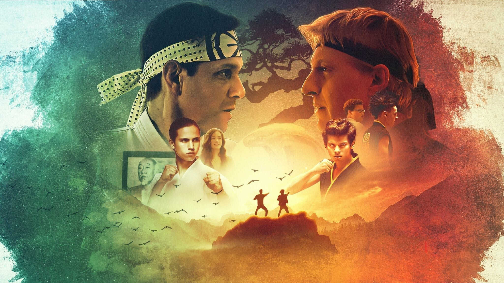
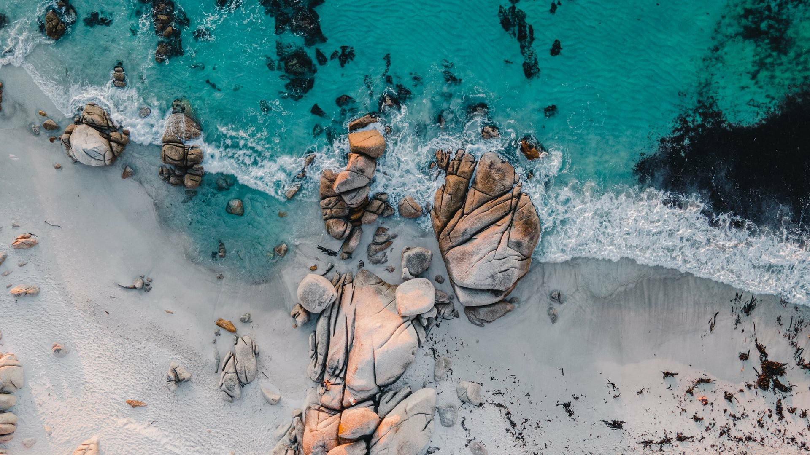

Eliomar León
Publicado 28 de julio de 2021Estudiante autodidacta de diseño web con 21 años. Inicio la creación de este sitio web con la intención de ir ampliando a medida que amplíe mis conocimientos en la utilización de HTML, CSS y JavaScript, mediante el servicio de GitHub Pages. En primera instancia servirá también como un respaldo online de mi progreso.
Pasatiempos:
Publicado 4 de agosto de 2021- Películas
- Series
- Fotografiá
Películas
Película es un término que proviene del latín pellicŭla y que tiene diversos usos. Su acepción más habitual está vinculada a la obra cinematográfica que suele narrar una historia o adaptada por un guionista y cuya puesta en escena depende de un director.
Series
Obra audiovisual formada por un conjunto de episodios de ficción, de animación o documentales, con o sin título genérico común, destinada a ser emitida o radiodifundida por operadores de televisión de forma sucesiva y continuada, pudiendo cada episodio corresponder a una unidad narrativa o tener continuación
Fotografiá
es el arte y la técnica de obtener imágenes duraderas debido a la acción de la luz. Es el proceso de proyectar imágenes, capturarlas y plasmarlas bien por medio del fijado en un medio sensible a la luz o por la conversión en señales electrónicas.